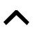
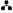

| 2026 | 18 mars | Radio Vostok: FocusAsso -- Patrimoine naturel. Les Amis du Jardin botanique de Genève, et les Amis du Salève. | Au micro pour l'AGAS: Maritza Pierola et Michay Guzman Stutz |
| 2025 | ed. 19 (mars) | Article: Vivez Veyrier | 27 ans d'existence pour l'Association Genevoise des Amis du Salève. Une affaire qui « marche » |
| 2023 | 12 septembre | Radiodiffusion Télévision Suisse (RTS): Couleurs locales | Entretien avec Monika Zweygarth, guide, association Genevoise des Amis du Salève (1'22") |
| 2023 | 16 septembre | Schweizer Radio und Fernsehen (SRF): Tagesschau (téléjournal, en allemand) | La sortie de l'AGAS a servi de cadre pour un reportage à l'occasion de la réouverture du téléphérique (2'41") |
| 2023 | 16 mai | Radio Lac: Il suffit de demander, Ludo loisirs | Entretien avec Maryse, guide de l'AGAS (2'51") |
| 2020 | 2 juillet | Radio Cité: Idées, rencontres | Interview avec David Viry. Sur le site archivé de l'AGAS. Radio Cité a cessé de fonctionner en février 2025 (7'09") |
| 2019 | 17 mai | Radiodiffusion Télévision Suisse (RTS): Couleurs locales | Entretien avec David Viry, président association genevoise des amis du Salève (1'58") |
| 2015 | 10 mars | Léman Bleu: Le Journal présenté par Cynthia Racine | Interview avec David Viry à l'occasion de l'éboulement au Salève (minutes 8:06 à 12:02) |
| 2009 | 5 avril | Reportage, Canal Onex | Tous les chemins mènent au Salève (3'12") |
| 2006 | #3/2006 (juin) | Article, SuisseRando | Les mordus du Salève |
| 1997 | 24 décembre | Article, Tribune de Genève | (Non disponible en ligne. Texte reproduit sur l'ancien site web de David Viry.) |
| 1996 | 5 mai | Annonce, Tribune de Genève | Lancement de l'AGAS, une annonce sous la rubrique "Familles et mariages" :-) |